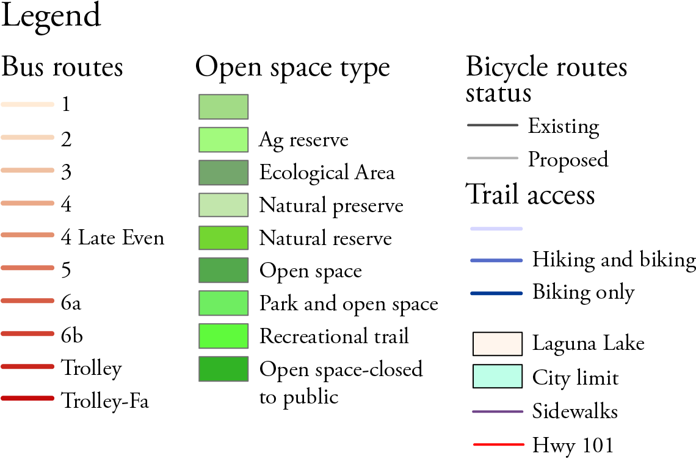

Two separate maps were created by using different data frames for each map to create a better picture of the site and a detailed view of the information being diplayed. Attributes of data layers were used to get specific factors needed for the map.
This top map shows the 100 year flood zones, in Los Osos in the highlighted blue regions, that contain erosive soils that are considered either high or moderate to high. The bottom map is a close up view of the northern highlighted region.
The start of using GIS included: exploring the different data layers available and being able to combine them into a simple functional map.
This map shows the different ways of getting around San Luis Obispo and various outdoor spaces that people can use as a travel destination. A resource to bring people out of their house and into the natural outdoors around them.
